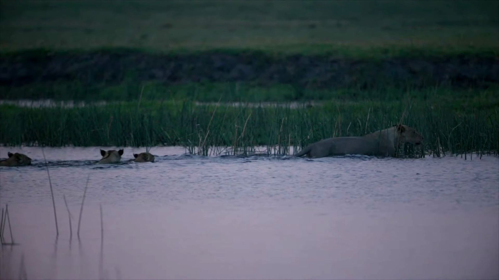
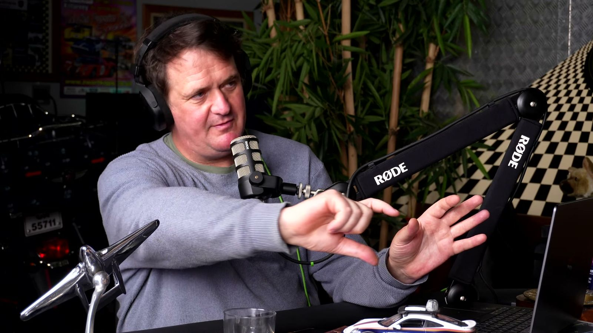
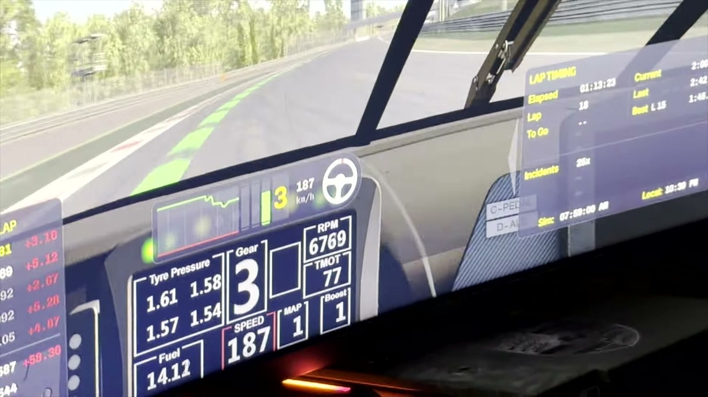

Conservation / Wildlife Film
Chasing lions and adventures in the African bush, part two
Robert Hofmeyer on the Misfits pride after dark, the lion that charged him and never came back from Namibia, and why real footage still matters in the age of AI. Then Peter tells the story of a King Air under fire in Mozambique, and both guests take the wheel of a race simulator.

Part two opens with a piece of footage Hofmeyer says he had never shown publicly. It is dusk on the Chobe riverfront, and the Misfits, the pride at the centre of part one, have spent the day eyeing a herd of buffalo across the river in Namibia. Broken Paw limps down to the water with the others. Then a cub of about four months walks into the main Chobe channel and starts to swim.
An older youngster tries to pull it back. The cub turns and goes again, and the whole pride, around thirteen lions, follows it into a river full of crocodiles as the light goes. Normally it works the other way round: the adults cross first and the mothers call and call until the little ones find the nerve to follow. "One of the most amazing things I've ever seen," Hofmeyer says.

Broken Paw, Stumpy, Mad Eye and Pretty Boy
Hofmeyer is almost certainly the person who has spent the most time with this pride. Most game drives stay near the gate, where the big prides are, and turn around once the guests have seen their lions. He isn't a researcher, he is careful to say, but he passes his data on to the lion researchers working in Botswana, who don't have the field budget to follow the pride properly themselves. The lions had no names before he arrived. Now the local people and the researchers use his.
They are, by his own admission, not subtle: Broken Paw, Stumpy, Black Mouth and Lucky. To the east ran a coalition he didn't name, Tom Tom and Caller, who held the prime riverfront territory. From the west came two males he did name. One is Mad Eye, a funny-looking lion with a lopsided eye and lip, and the one that charged him while mating with a female, the encounter that opens part one. The other is his coalition partner, Pretty Boy, "just a stunning lion". The two are unusually affectionate with each other, something Hofmeyer filmed over a single season. Lions, he points out, are deeply affectionate animals; even a youngster separated from the pride for ten minutes gets a full greeting when it returns.
About six months before this recording, Mad Eye crossed the river into Namibia and never came back. Nobody knows for certain what happened. The land on the far bank is cattle farmland, and when lions cross there is a WhatsApp group where sightings are reported so someone can try to chase them back. If nobody gets there in time, farmers do sometimes shoot them, and that is probably what happened to Mad Eye. Pretty Boy has since stopped patrolling his territory and taken up with a different pride, and new males have moved in, sensing the weakness. Hofmeyer expects them to take over.
His favourite recent moment involved no drama at all. Early one morning, before sunrise, some of the young males climbed onto a spit of land by the river, with Lucky below them, and the water was so still that it held a perfect reflection of every lion. Something far off caught their attention and all of them froze. For about ten seconds nothing moved, long enough that he thought his camera had seized. Then one of them turned and looked straight at him.

From printmaker to wildlife filmmaker
Hofmeyer didn't start out in wildlife. He studied fine art at Michaelis in Cape Town, trained as a printmaker, studied photography, and later completed a few years of zoology and mathematics through Unisa without finishing the degree. After art school he went into filmmaking and web design. The wildlife work started about ten years ago, on family holidays driving around Kruger with his kids in the back, and has only been properly professional for the last five, because, as he puts it, there are too many people who want to be there and not enough space.
Most of his income still comes from selling stock footage, which he would not recommend to anyone: it pays in drips and drabs, and he expects AI to collapse the market. What keeps his archive valuable, for now, is that he has shot it in 8K raw at 100 frames per second. He works with his brother-in-law Andy, who drives the vehicle and makes the coffee. While the two of them are away, their wives, who are sisters, move in together with the children, which Hofmeyer offers as the reason his family doesn't miss him much.
The fact that it's real has meaning
Hofmeyer has been accused of posting AI footage of his own work. He once answered a doubter by posting a photo someone else had taken of his vehicle with the same leopard walking past; the reply was that the photo could be AI too. He thinks advertising and low-end content will move to generated wildlife, and sometimes the result will be better. But he believes mid- to high-end natural history, the BBC tier, will stay real, because audiences won't accept anything else.
"If I watched an entire documentary and became invested in the characters and then afterwards found out it was not real, I would be very upset."
The numbers on his channels don't track the effort. A clip of a leopard stalking towards the camera ran into the millions of views, and picked up another 100,000 in two days when he reposted it. His most-viewed video of all is a slow pan across guinea fowl drinking at a waterhole, with around 20 million views, a shot he doesn't rate, and many of the comments, he says, discuss how delicious the birds are. The long-form behind-the-scenes films he puts real work into usually draw two or three thousand. His last series, from South Luangwa, was about twenty ten-minute films and two weeks of solid editing. For the Misfits series he is now raising money for through Kickstarter, he wants an editor who isn't him. Across all his platforms, Moving Pictures Africa has about half a million followers.
Shot down in Mozambique
Asked for the most remarkable thing that ever happened to him in a cockpit, Peter, who has flown ten different heads of state, picks the day he was shot out of the sky. He was flying a King Air carrying developers to Ponta do Ouro in southern Mozambique, still a war-torn area at the time, to survey a site. He refused to fly unless the head of the Mozambican Air Force came along, on the same principle he used for test flights after maintenance, when he insisted the engineers who had worked on the aircraft sit in the back. The general agreed and boarded with his second-in-command.
On short finals Peter flew through what he took for a flock of birds. It was armour-piercing heavy machine-gun fire. With eight passengers looking to him for an answer and the man beside him saying he thought they'd been shot at, he rolled into a 90-degree bank towards the ocean and flew about ten feet above the waves, thinking he might make Richards Bay. The fuel gauges were visibly dropping, so he put the aircraft down in the bush instead. He had briefed the passengers, some of whom he had flown before, to get out with the fire extinguishers the moment the aircraft stopped. When he turned round to tell them, the cabin was already empty. Fuel was pouring out of the wings.
He walked straight up to the general, told him the border was about eight kilometres north, and sent him and his second-in-command off on foot. The general later told Peter personally that it had been an assassination attempt on him.
"You don't train for that in a simulator."
A real simulator
Which is where the episode ends up. Neither guest had ever sat in a race car, and Hofmeyer, who likes to drive with a podcast on, admits he hates going fast in a car when someone else is driving. Pablo learned that about himself on a supercar rally through the vineyards, riding with Peter in a Mini that kept pace with the Lamborghinis and Ferraris; after a white-knuckled first day he asked Peter to calm down, and was told at the end of the week that Peter had only ever been at about 75 percent.
Peter, who coaches drivers on the simulator, gave each of them eight coached laps around Monza and then a handful of timed ones in a paddle-shift car. Hofmeyer set a 2:00.0 and Pablo a 2:01.0, which put them at the bottom of the podcast's leaderboard, behind Rob Barber on 1:51.9 and a long way off the 1:44.1 shared at the top by Byron Mitchell and Michael Stephen. Pablo crashed more, then slowed down and set his best times without incident. Hofmeyer's hands were sweating so hard they slipped on the wheel, and he found the force feedback and the three wraparound screens far more intense than it looks from the outside. Peter's point was the one he makes to every driver he coaches: anyone can go fast in a straight line. The time is in the corners, in carrying speed, trail braking and not scrubbing the tyres, and it takes years to find it.

Hofmeyer's work is at movingpictures.africa and on Instagram, Facebook and TikTok as Moving Pictures Africa, and the Misfits series is linked from chobelions.com.